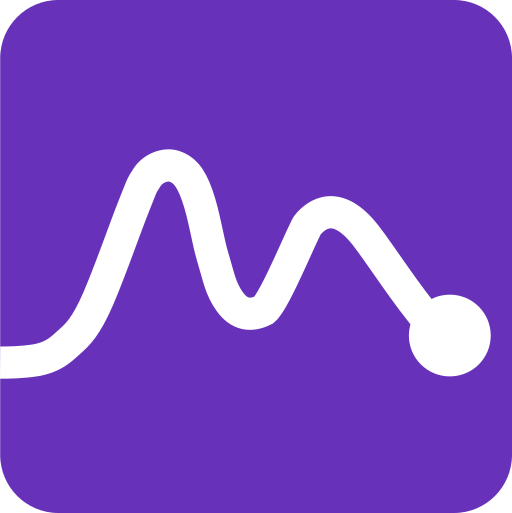
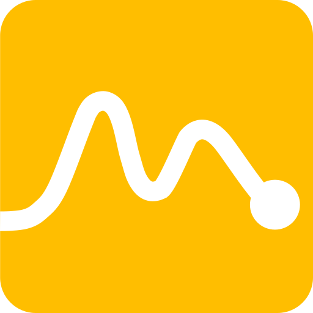
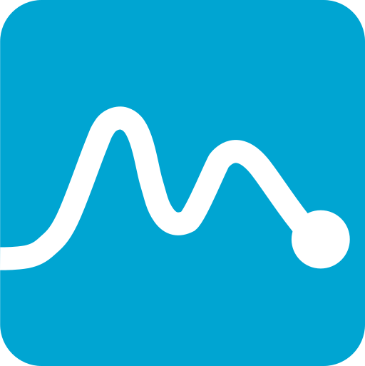
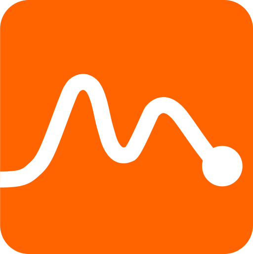
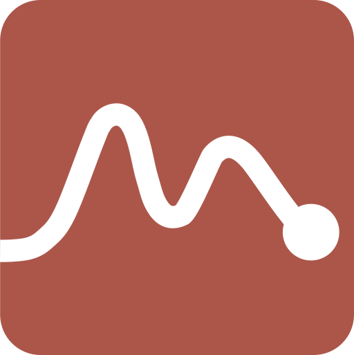
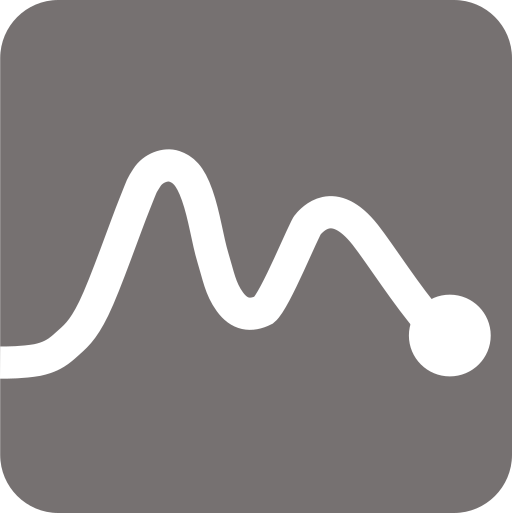

nirs4all
Python library and desktop ecosystem for preprocessing spectra, building pipelines, visualizing results, and deploying NIRS models.
Open nirs4all.orgnirs4all is an open-source ecosystem for NIR spectroscopy workflows: read vendor files, assemble datasets, run chemometric methods, publish reproducible pipelines, benchmark results, and inspect ecosystem health.
Use this page when searching for open-source NIRS software, near-infrared spectroscopy file readers, PLS tools, reproducible NIRS datasets, or browser-based spectroscopy modelling.
Python library and desktop ecosystem for preprocessing spectra, building pipelines, visualizing results, and deploying NIRS models.
Open nirs4all.org
nirs4all-formatsRust and WebAssembly readers for vendor NIRS and spectroscopy file formats, with an in-browser demo that keeps files local.
Open formats.nirs4all.org
nirs4all-datasetsCitable catalog of raw NIRS reference datasets with provenance, access tiers, statistics, DOI links, and byte-free identity cards.
Open datasets.nirs4all.org
nirs4all-methodsPortable C++17 libn4m methods engine with a stable C ABI, language bindings, parity reports, and benchmark documentation.
Open methods.nirs4all.org
nirs4all-webFull-WASM browser workbench for uploading spectra, building a pipeline, running cross-validated PLS or PLS-DA, and predicting locally.
Open web.nirs4all.orgDataset assembly bridge and browser dataset builder for turning spectra and sidecars into validated nirs4all dataset specifications.
Open io.nirs4all.org
nirs4all-repositoryPublic catalog of pre-configured, tested NIRS pipelines for nirs4all and dag-ml, loadable by name with provenance.
Open repository.nirs4all.org
nirs4all-papersReproduction-document publisher for deposited papers, methods, bibliography, sidecars, and live in-browser pipeline replay.
Open papers.nirs4all.orgStatic benchmark arena for scored, reproducible NIRS pipeline comparisons and dataviz.
Open benchmarks.nirs4all.orgRelease and health dashboard for package versions, registries, downloads, code stats, CI, and public page visits.
Open cockpit.nirs4all.org| Task | Use | Tool |
|---|---|---|
| Read vendor spectra | Decode spectroscopy files locally in the browser or from Rust bindings. | nirs4all-formats |
| Build datasets | Combine spectra, targets, metadata, sidecars, and validations into one dataset specification. | nirs4all-io |
| Find reference data | Browse NIRS datasets with provenance, license, DOI, and statistical identity cards. | nirs4all-datasets |
| Run methods | Use portable PLS and NIRS methods through C, Python, R, MATLAB, JavaScript, and other bindings. | nirs4all-methods |
| Model in the browser | Upload spectra, build a pipeline, run cross-validation, inspect results, and predict without a backend. | nirs4all-web |
| Reuse pipelines | Load validated pipeline recipes by name with provenance and checksums. | nirs4all-repository |
| Publish reproducible work | Deposit paper bundles with methods, bibliography, reproducibility sidecars, and live replay. | nirs4all-papers |
| Monitor quality | Track benchmarks, package health, releases, CI, and ecosystem status. | benchmarks and cockpit |